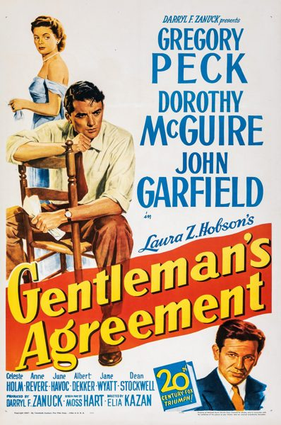

Gentleman's Agreement
Starring: Gregory Peck, Dorothy McGuire, Celeste Holm
Director: Elia Kazan
Writer: Moss Hart
Producer: Darryl F. Zanuck
Gentleman's Agreement is a 1947 American drama film based on Laura Z. Hobson's best-selling 1947 novel of the same title, directed by Elia Kazan. The film is about a journalist (played by Gregory Peck) who pretends to be Jewish to research an exposé on the widespread antisemitism in New York City and the affluent communities of New Canaan and Darien, Connecticut.
Trivia
- Won the Academy Award for Best Picture.
- Won the Academy Award for Best Supporting Actress.
- Won the Academy Award for Best Director.
- Selected for the National Board of Review: Top Ten Films.
- Also nominated for: Academy Award for Best Actor; Academy Award for Best Actress; Academy Award for Best Film Editing; Academy Award for Best Writing, Adapted Screenplay.
- Based on Gentleman's Agreement (novel by Laura Z. Hobson).
- Zanuck decided to make a film version of Hobson's novel after being refused membership in the Los Angeles Country Club, because it was assumed (incorrectly) that he was Jewish.
- The role of Phillip Green was first offered to Cary Grant, but he turned it down.
- Peck decided to accept the role, although his agent advised him to refuse, believing Peck would be endangering his career.
Filming Locations
- Connecticut
- New York City
- Portions of the film were shot on location in Darien, Connecticut.
Previous Showings
2 Runs • 0 Festivals
Original Billings: 1 run (March 28, 1948)
Original Run: March 28, 1948 (Sunday - Saturday)
All runs on record (2):
- March 28, 1948 (Sunday - Saturday)Gregory Peck, Dorothy McGuire
- May 13 - 14, 1993w/ On the Waterfront